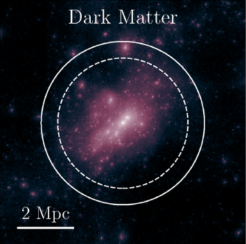
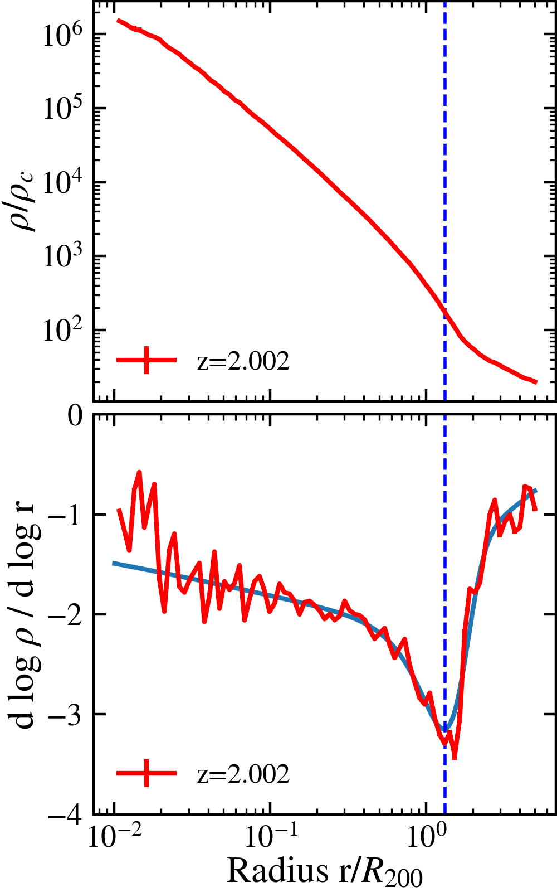
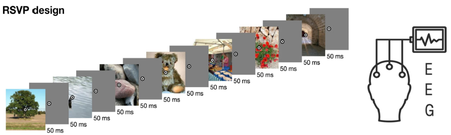
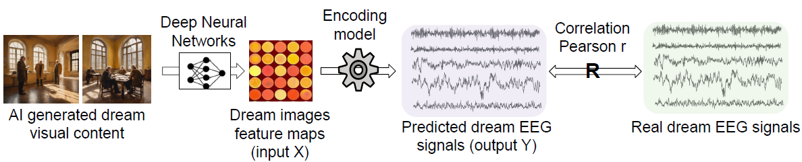

The measurements of the splashback features of dark matter halos using TNG300 and MillenniumTNG simulations
Vogelsberger Lab, MIT Kavli Institute for Astrophysics and Space Research, Jan 2024 - Ongoing
The splashback radius defines the boundary of a dark matter halo, where infalling dark matter particles
reach their first apocenter and turn around. By examining the distribution of the splashback radius
and the associated splashback features of dark matter halos, such as, the width and depth of the minimum
in the gradient profiles of dark matter halos in cosmological galaxy formation simulations IllustrisTNG
and MillenniumTNG. In short, the width of the gradient profile decreases with increasing halo mass and
redshift, indicating a sharper transition in more massive and older halos. Conversely, the depth of the
gradient profile increases with halo mass and remains relatively independent of redshift, suggesting
that more massive halos have more pronounced splashback features regardless of their formation epoch.
My roles:
- Independently conducted the entire analysis process, including writing code to compute density
profiles, performing bootstrap methods to obtain statistical results of splashback features, and
using curve fitting techniques to derive mathematical formulas.
- Managed complex computations, working with GPU acceleration, implementing parallel computing, and
handling sbatch job submissions to efficiently process large datasets.
- Collaborated with team members to optimize the analysis pipeline, significantly reducing computational
time and enhancing the overall efficiency of the research process.
Article in preparation.


Memory transformation and alpha desynchronization during sleep
Staresina Lab, University of Oxford, Feb 2024 - Ongoing
Sleep has positive effects on memory consolidation, a critical process for learning
and cognitive function. By analyzing changes in both lower and higher-level visual
representations of memories before and after sleep, we aim to understand how sleep
affects the retention and modification of visual and semantic information.
My roles:
- Inplemented EEG data whitening algorithm, and Extracted feature maps from deep neural networks (DNNs),
including AlexNet, ResNet, BLIP, CLIP, and GPT-Neo, and building encoding models to predict EEG data
from the extracted feature maps on both Python and Matlab.
- Assisting in data collection and analyzing within the group, including EEG setup and localization, fMRI
preprocessing and MVPA, and diffusion MRI analysis and modeling.
Attempting dream decoding with generalizable visual EEG encoding models
DxE Laboratory, University of Montreal, May 2023 - Oct 2023
The realm of dreams remains relatively uncharted due to the reliance of subjective
reports to access dream content. Building a dream decoding model is difficult due
to the difficulty in collecting large sample sizes of dream experience. We trained
an encoding model to generate EEG signals from deep neural network feature maps of
visual images viewed during waking, and used the model to try and predict EEG
signals collected during dreaming.
My role:
- Independently developed and implemented the encoding model to map EEG signals
to visual features, leveraging pre-trained deep neural networks.
- Preprocessed EEG data, including noise reduction and artifact removal, to ensure
accurate analysis of neural signals associated with dream content.
- Conducted analysis using representative similarity analysis (RSA), permutation
tests and correlational analysis to decode visual dream content.
Poster was presented at the Cognitive
Neuroscience Society 2024 Annual Meeting.

